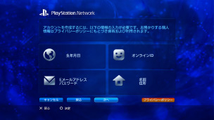

PlayStation™Network > サインアップする
サインアップする
この機能を使うには、システムソフトウェアのアップデートが必要になる場合があります。
PSNSMは、 （PlayStation®Store）でのショッピングや、
（PlayStation®Store）でのショッピングや、 （フレンド）のチャット機能などを提供するオンラインサービスです。PSNSMを利用するには、Sony Entertainment Networkのアカウントが必要です。
（フレンド）のチャット機能などを提供するオンラインサービスです。PSNSMを利用するには、Sony Entertainment Networkのアカウントが必要です。 （PlayStation™Network）から
（PlayStation™Network）から （サインアップ）を選び、画面の指示に従ってアカウントを作成してください。
（サインアップ）を選び、画面の指示に従ってアカウントを作成してください。

アカウント作成時に登録する主な項目
| 個人情報 | 登録する人の生年月日／名前／住所などを入力します。 |
|---|---|
| マスターアカウント／サブアカウント | アカウントには、マスターアカウントとサブアカウントがあります。 マスターアカウント： 標準的なアカウントで、一定年齢以上の登録者が作成できます。マスターアカウントは、サブアカウントの利用条件を設定できます。 サブアカウント： 一定年齢以下の方が利用するためのアカウントです。マスターアカウントの監督下で利用することができます。サブアカウントはウォレットを作成できません。有料商品やサービスなどを購入して支払いをするときは、マスターアカウントのウォレットを使います。マスターアカウントがないときは、サブアカウントを作成できません。 マスターアカウントとサブアカウントの利用条件は、国や地域によって異なります。詳しくは、各地域のWebサイトをご覧ください。 |
| サインインID（Eメールアドレス） | PSNSMにサインインするときに使うIDを登録します。 （PlayStation®Store）からのお知らせを受信できるインターネットメールアドレスを登録してください。 |
| パスワード |
パスワードは次の内容で入力してください。
|
| オンラインID |
PSNSM上で公開する名前を登録します。1度設定すると変更できません。オンラインIDは次の内容で入力してください。
|
ヒント
- サブアカウントは、次のWebサイトから作成してください。
https://www.playstation.com/acct/family - サブアカウントを作成する場合、年齢によってはパソコンが必要です。登録作業を進めると、マスターアカウントのサインインID（Eメールアドレス）にメールが送付されるので、指示に従って、マスターアカウントの登録者がパソコン上で登録を完了してください。
- 作成したサブアカウントでPSNSMにサインインするには、サブアカウントをPS3™にログインするユーザーに登録する必要があります。 詳しくは、（PlayStation™Network）＞［作成済みのアカウントを利用する］をご覧ください。
- サインインID（Eメールアドレス）とパスワードは公開されません。他人に知られないように取り扱いに注意してください。
- アカウントはPS3™にログインするユーザー1つに対して1つだけ作成できます。複数のアカウントを作成するときは、
 （ユーザー）で新しいユーザーを作成してください。
（ユーザー）で新しいユーザーを作成してください。 - 登録した個人情報のお取り扱いについては、各地域のWebサイトをご覧ください。
- PSNSMの利用にはブロードバンドインターネット環境が必要です。ダイヤルアップ接続には対応していません。
- PSNSMは、利用できる地域や言語が限られています。詳しくは、各地域のサポートにお問い合わせください。
- （サインアップ）は、アカウントを作成していないときだけ表示されます。